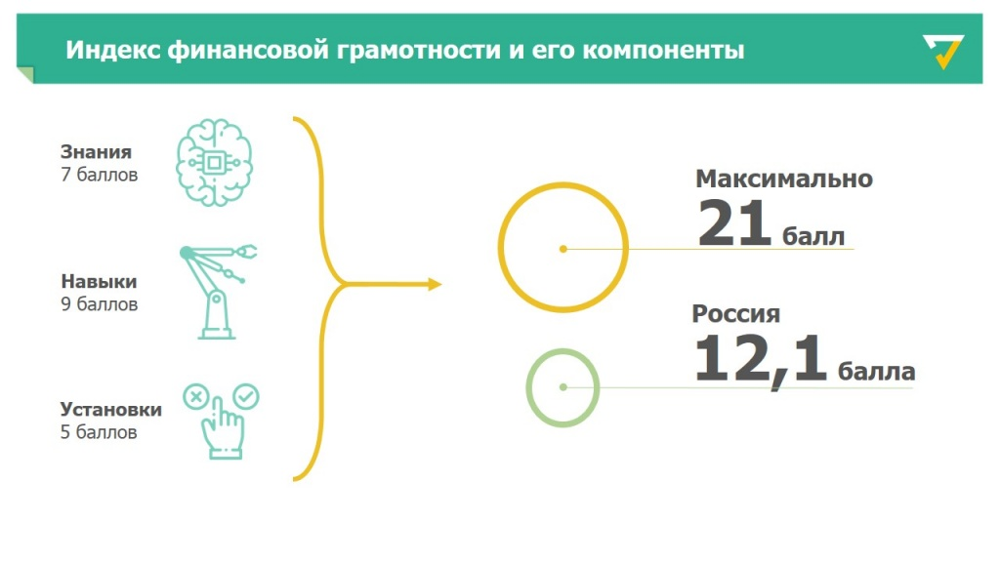
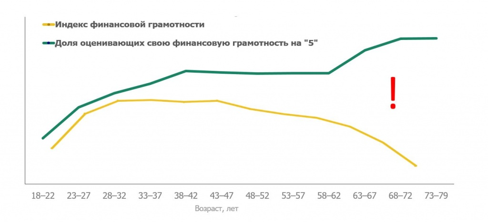
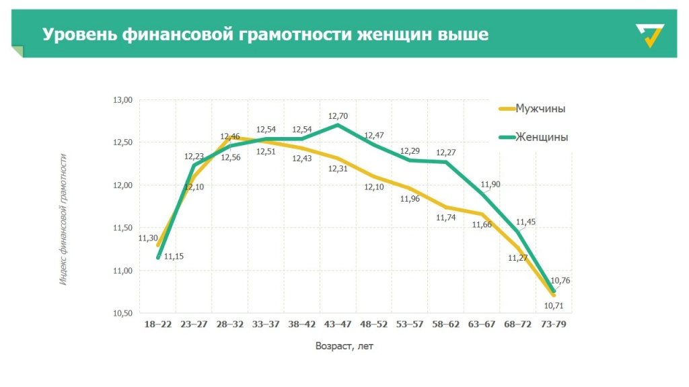

Состояние финансовой грамотности в России
Уровень финансовой грамотности России низок и требует долговременной скоординированной работы. Навыки формирования финансовых резервов на “Черный день” отсутствуют у большинства российских домохозяйств. Только в четверти домохозяйств ведется учет доходов и расходов. Лишь треть россиян стараются финансово обеспечить свою пенсию, обращают внимание на доходность и гарантию сохранности сбережений.
Еще одна особенность финансовой культуры россиян - низкий уровень ответственности за риски, связанные с пользованием финансовыми услугами. Более 20% населения России полагают, что небольшая задержка по кредиту не страшна, 37% потребителей считают, возвращать взятый кредит не обязательно, если этому препятствуют непредвиденные обстоятельства (потеря работы, болезнь, развод, переезд). Беспокоит факт того, что, каждый пятый, имеющий кредит (22%), указал, что выплаты по кредиту занимают более 30% доходов. 68% и вовсе выплачивает 50% своих доходов.
Данные установки являются следствием следующих проблем:
- недостатком материалов и уроков, связанных с финансовой грамотностью;
- несовершенством законов и нормативов;
- низкой информированностью о защите прав потребителей и пенсионных прав граждан.
Показатели финансовой грамотности от НАФИ
Для оценки знаний использовался Индекс финансовой грамотности, отражающий способность человека к разумному управлению личными финансами. Этот показатель измеряется в диапазоне от 1 до 21 балла.
Число россиян с высоким уровнем финансовой грамотности – до 12,4%. Средний уровень финансовой грамотности – у 46,8% населения, низкий – у 40,8%. Наиболее финансово грамотные жители России –люди в возрасте 30-45 лет, с высшим образованием, квалифицированные специалисты, воспитывающие 1-2 детей. Низкий уровень финансовой грамотности характерен для неработающих (студентов и, особенно, пенсионеров), людей, не пользующихся финансовыми продуктами, многодетных семей, жителей малых городов. Самооценка финансовой грамотности не всегда совпадает с Индексом финграмотности. Россияне пожилого возраста чаще других уверены в своей способности грамотно распоряжаться деньгами, хотя их Индекс ниже, чем у среднего возраста. Такая самоуверенность создает определенные риски для людей старшего возраста. Вероятность стать жертвой мошенничества в этой группе выше.
Исследование также показало, что женщины в целом более финансово грамотны, чем мужчины. Примерно до 40 лет гендерные различия в Индексе почти незаметны, но после 40 лет превосходство женщин становится явно выраженным. При этом мужчины лучше понимают базовые свойства финансовых продуктов (например, вкладов и займов), инфляции, риска и доходности.
Проверка финансовой грамотности среди школьников и их семей. На основе исследования НАФИ.
Национальное агентство финансовых исследований провело данное исследование среди всего населения России в каждом из регионов. Мне стало интересно: какой результат покажут мои одноклассники и сверстники, поэтому я решил повторить данный опрос среди них. Были взяты вопросы оригинального интервью и слегка скорректированы. Ребята давали оценку не только себе лично, но и своей семье в целом. Перед тестированием ученики дали личную оценку своей финансовой грамотности, на основе собственных представлений.
Как показал опрос, респонденты склонны завышать свои знания. Ребята в среднем оценили себя на 16,5 баллов, когда их тестовое среднее значение составило 14,2 балла. Мне это напомнило один опрос, который показал: большинство водителей считают, что водят лучше большинства, но это математически невозможно.
Следует отметить, что погрешность у меня несколько выше, чем в оригинале за счет того, что опрос был закрытого типа. На вопросы были предложены ответы, хотя в оригинале люди называли ответ своими словами. Также данные собирались посредством онлайн формы, а не при личном интервью. Но даже с учетом данной погрешности ребята и их родители показали достаточно высокие результаты в сравнении с общероссийскими 12,4.
Помимо общего результата, данные разбивались на три категории-индекса:
● Индекс Знания отражает понимание человеком базовых свойств финансовых продуктов (вкладов и займов), инфляции, а также взаимосвязи риска и доходности
● Индекс Навыки отражает умение человека принимать взвешенные финансовые решения в повседневной жизни.
● Индекс Установки отражает ориентацию человека на достижение долгосрочных финансовых целей
ИНДЕКС “ЗНАНИЯ”
Индекс строится на основе анализа ответов респондентов на 7 вопросов: 4 вопроса по финансовой арифметике и 3 вопроса, касающиеся базовых финансовых понятий. Результаты данного индекса сильно отличаются от остальных тем, что именно здесь тестовая оценка оказалась выше личной. Ребята набрали 5,8 баллов в среднем, хотя оценили себя всего на 5,4. Именно в данной категории наибольшее количество правильных ответов. Максимально можно было набрать 7 всего баллов. Несмотря на юный возраст опрошенные замечательно справились с вопросами, связанными с финансовой арифметикой и взаимосвязью риска и доходности. Исследования НАФИ, кстати, также показывают высокие результаты у граждан России в данной категории.ИНДЕКС “НАВЫКИ”
Индекс строится на основе анализа ответов на 9 вопросов о планировании расходов и доходов, ведении семейного бюджета, решении финансовых проблем, а также способах выбора финансовых продуктов и услуг. Разброс личной оценки и тестовой по данному индексу не особо велик, однако в данном случае ребята переоценили свои силы, набрав 6,5 баллов, при личной оценке 7,2 и максимальной 9. Но, как бы там ни было, результат в данной категории весьма неплохой. Опрошенные хорошо понимают важность накоплений и сбережений, необходимость планирования доходов и расходов, но вот с решением финансовых проблем у них появляются затруднения. Часть респондентов в трудной финансовой ситуации решили воспользоваться заемными средствами, или вообще кредитом. Подобные решения, по мнению минфина и НАФИ, не способствуют улучшению положения, а скорее наоборот усугубляют его.ИНДЕКС “УСТАНОВКИ”
Индекс отражает, отношение к финансам, понимание роли денег и необходимости соблюдения разумного баланса трат и сбережений. Максимальное допустимое значение для индекса Установки составляет 5 баллов. В данной категории результаты весьма печальны. Опрошенные набрали всего 1,9 балла из 5 возможных, при личной оценке 4. Такие неудовлетворительные результаты и превышение личной оценки в 2 раза над тестовой говорит о том, что темы, связанные с данной категорией развиты у людей хуже остальных. Респонденты слабо понимают роль денег, как инструмента, а значит и способы работы с ним. Эти вопросы требуют наибольшего внимания и работы, как со стороны граждан, так и со стороны государства.ВЫВОДЫ
Данный опрос позволил увидеть наиболее важную проблему, связанную с финансовой грамотностью — это отношение к финансам. Проблема довольно глубинная и требует длительной работы над ней. Я верю, что при общих усилиях государства, активных граждан и предпринимателей нам удастся с ней справиться. Также очень хочется верить, что я лично посодействовал повышению финансовой грамотности среди моих сверстников. Надеюсь, что хотя бы некоторые ребята после опроса обсудили с родителями темы, связанные с финансами. Также надеюсь, что после моего выступления, кто-то пожелает повысить свою финансовую грамотность. В таком случае я буду точно уверен, что данное исследование принесло пользу людям. Я же посодействую и приведу несколько интернет ресурсов и книг, которые в легкой и игровой форме помогут разобраться со сложной темой финансов.Сайты:
● https://doligra.ru/- игры для повышения финансовой грамотности для классного часа
● https://dni-fg.ru/- онлайн уроки финансовой грамотности
● https://fincult.info/ - сайт с материалами по финансовой грамотности
● https://vashifinancy.ru/for-smi/press/news/onlayn-igra-novyy-sposob-povysit-finansovuyu-gramotnost/ - игра от сайта ВашиФинансы
● https://iq.hse.ru/more/finance/neobhodimost-povishenia-finansovoj-gramotnosti - статья для учителей и школ от ВШЭ с рекомендациями по проведению уроков финансовой грамотности
● http://onlinecourse.ncfg.ru/enter - онлайн курс повышения финансовой грамотности
● https://play.google.com/store/apps/details?id=rudos.tech.fonda - мобильная игра про соблюдение баланса между финансами и личными желаниями
Книги:
● Джордж Клейсон: «Самый богатый человек в Вавилоне» - формирует правильное отношение к деньгам
● Роберт Кийосаки: «Богатый папа – бедный папа» – дает четкое понимание об активах и пассивах
● Бодо Шефер: «Мани или азбука денег» – для детей и родителей
● Джеймс Маккена: «Твой первый миллион как его заработать и не потерять»
● Гудвин Майкл: «Экономикс: Как работает экономика (и почему не работает) в словах и картинках»